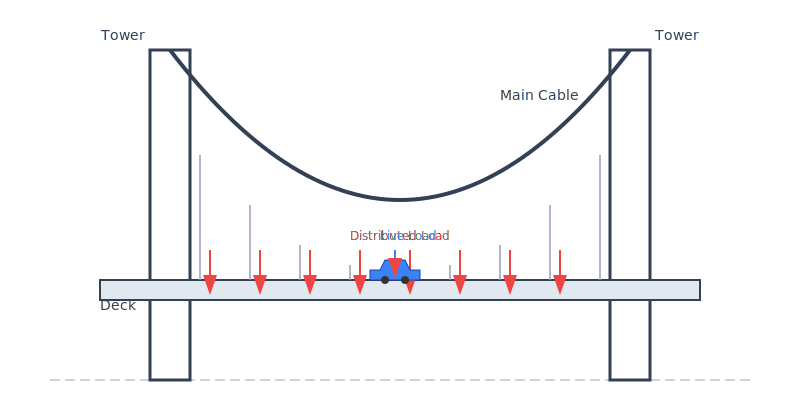

현수교 구조 해석 (Suspension Bridge Mechanics)

구조 (Structure): 두 개의 주탑(Tower)과 이를 잇는 메인 케이블(Main Cable), 그리고 케이블에 매달린 상판(Deck)으로 구성됩니다.
하중 (Load):
- ● 등분포 하중 (Distributed Load): 상판 자체의 무게와 같이 전체에 고르게 작용하는 하중입니다.
- ● 활하중 (Live Load): 차량이나 사람 등 움직이는 물체에 의한 하중입니다.